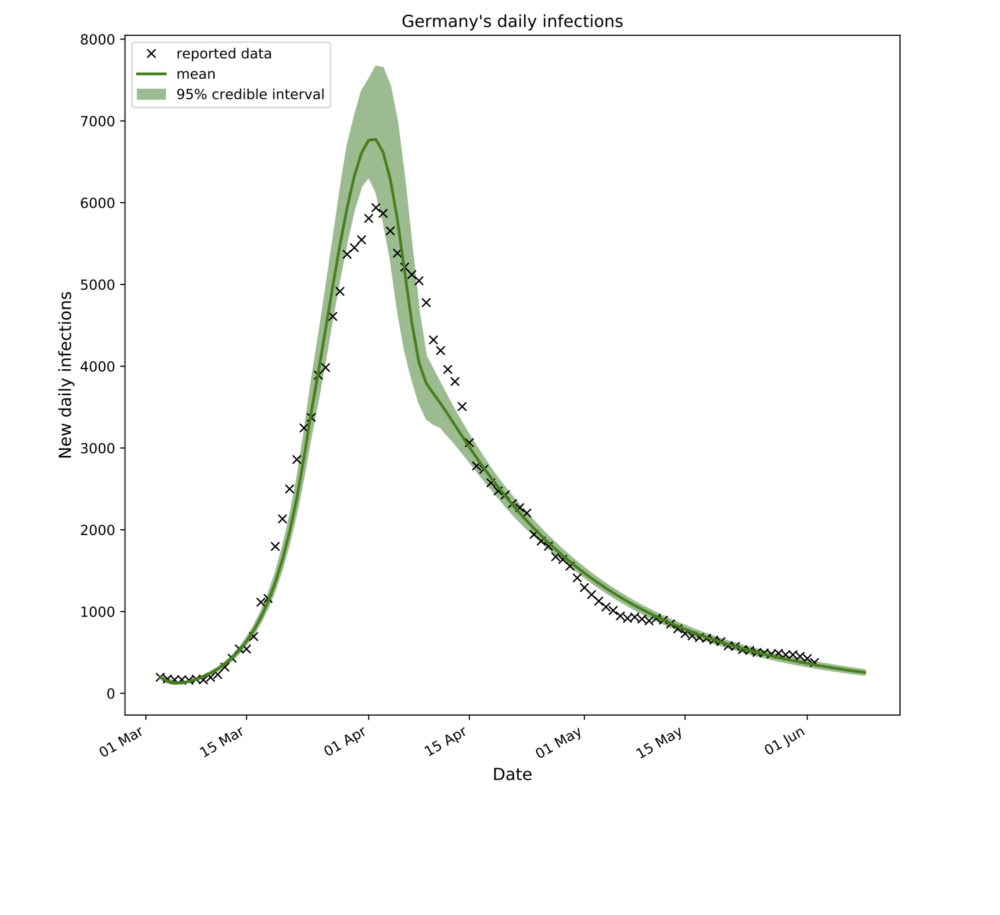

COVID-19 projections
A data-driven model is used to forecast the daily number of new COVID-19 infections in various countries.
Predictions
 TODO: Dropdown menu for different countries. Shows parameter intervals.About the forecasting tool
The developed forecasting tool models the reported daily number of new infections using the epidemiological SEIR equations with Bayesian inference. A high-level explanation of the SEIR model, Bayesian inference, and the accuracy of the projections can be found below.
What is the SEIR model?
To model the spread of an infectious disease in a population, one can use the SEIR epidemiological model. The idea is to split the population into 4 groups – Susceptible, Exposed, Infectious, and Recovered groups – and to keep track of how people transit from one group to another. In the beginning, the entire population is in the Susceptible compartment because everyone is susceptible to being infected. To explain the 3 other compartments, let me use an example. Let’s say Alex is infected with COVID-19 and Riley is not. When hanging out together, Alex infects Riley who then moves from the Susceptible group to the Exposed group. At this stage and for the duration of the latent period, Riley is infected but not yet infectious which means she cannot transmit the disease. Afterwards, Riley transits to the Infectious group because he can infect other people. Finally, after the infectious period is over, Riley enters the Recovered group and can no longer infect anyone or be infected (either because she is immune to the disease or she has died). A detailed explanation of compartmental epidemiological models can be found here.
After a susceptible individual is infected, they move to the Exposed, Infectious, and Recovered compartments sequentially. source: IDM.
What is Bayesian inference?
If we knew exactly the contact rate (a measure of infection rate), the latent and infectious periods, we would be able to build a very accurate SEIR model and allow our public health policymakers to make informed decisions based on the model’s projections.
Unfortunately, these epidemiological parameters are mostly unknown and can actually vary from region to region and even from individual to individual.
One way of addressing this issue is to work our way backwards from available regional data and infer probable values for each parameter. Or, in other words, we try to answer the question: “which parameter values’ best describe the reported daily number of infections?” A popular and effective statistical method suited for this task is Bayesian inference1. Once we have our answer, we can make projections about the next few days while also quantifying the uncertainty in our predictions.
Where is the data from?
The data is obtained from the University of Washington’s Humanistic GIS Lab who, in turn, collects it from various sources. You can find more information about the sources here.)
The forecasting tool also takes into account national pandemic lockdown dates and its effect on slowing down the spread of COVID-19. The lockdown dates are obtained from various sources.
How accurate are the predictions?
Since the model is data-driven, its accuracy heavily relies on the quality of the data. Various factors can impact the quality of the data such as limited testing, undetected infected individuals, and reporting delays.
The model’s assumptions (listed below) also impact the accuracy of the predictions.
-
Once recovered, an individual cannot be re-infected. According to the CDC, the immune response of COVID-19 is not yet known.
-
The contact rate is assumed constant before the start of a lockdown and decreases linearly until it reaches a constant post-lockdown. The pre- and post-lockdown contact rates and the transition period are inferred by the model.
Are there other forecasting models?
There exist various other COVID-19 forecasting tools each potentially relying on different mathematical models and underlying assumptions. Two publicly-available ones are the models from ETH Zurich CSE Lab and University of Washington’s IHME.
This epidemic calculator is also another great source to visualize the role that each parameter in the SEIR model plays.
Acknowledgements
Many thanks to Compute Canada and Professor David Zingg at the University of Toronto for providing access to their computational resources.
If you have any questions, concerns, or suggestions, please send me an email at siavosh@ualberta.ca.